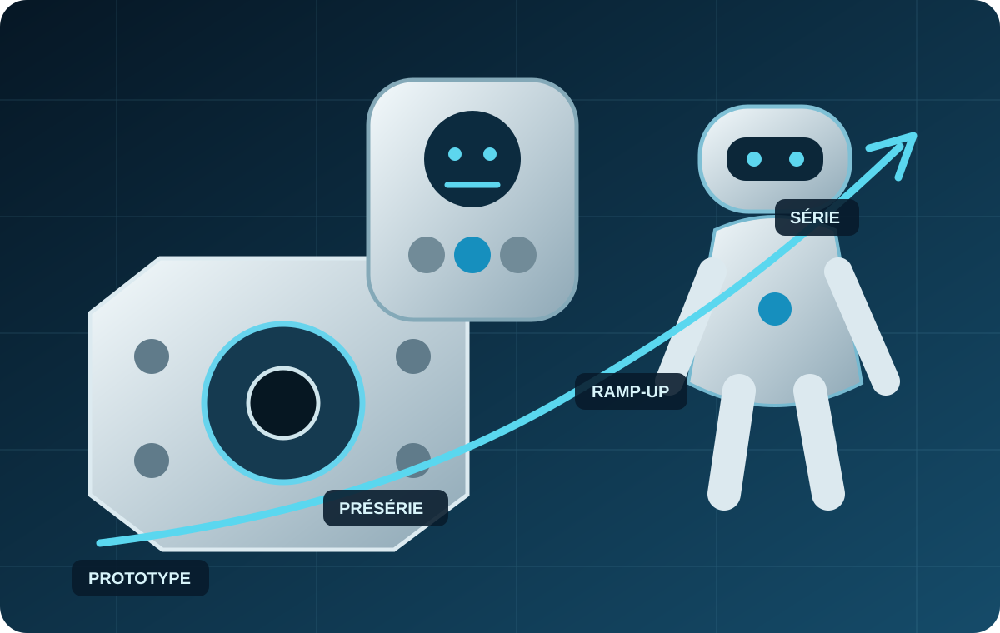
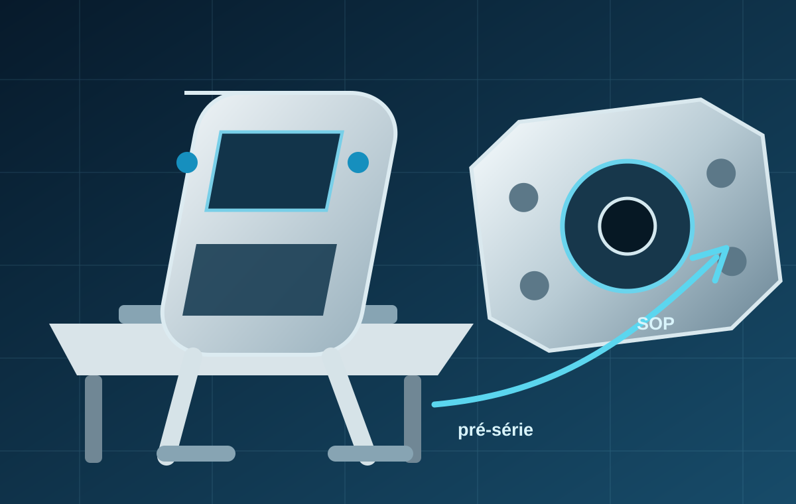
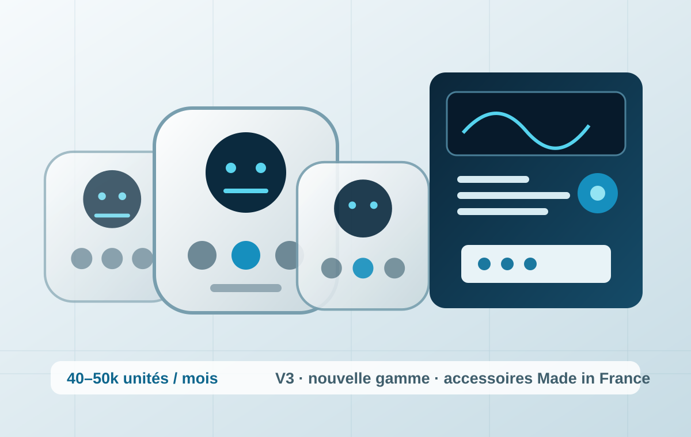
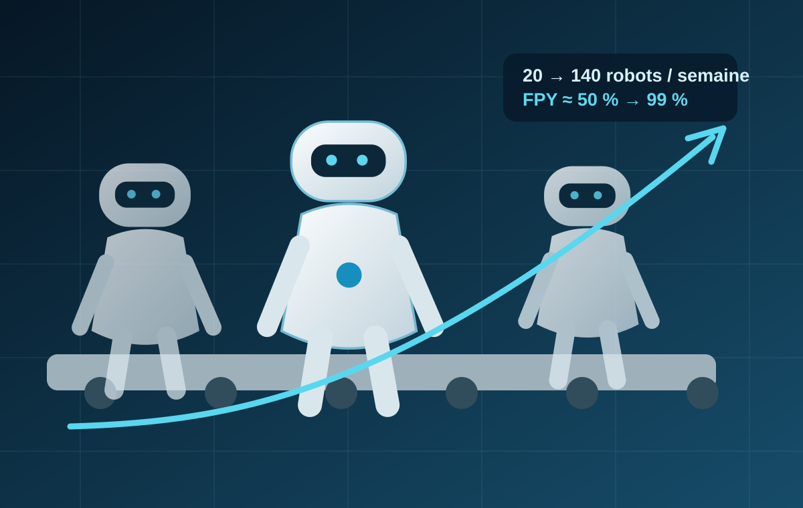

01
Industrialisation & NPI
Passage prototype → présérie → série, DFM/DFX, moyens, qualification et readiness.
Découvrir →EndurSys sécurise le passage de l’innovation à la production industrielle — de l’industrialisation au ramp-up, à la performance des opérations et à la maîtrise de la supply chain.

Une intervention senior, directement au contact des équipes, des fournisseurs et des moyens de production.
Passage prototype → présérie → série, DFM/DFX, moyens, qualification et readiness.
Découvrir →Capacité, rendement, FPY, qualité, flux, résolution de problèmes et stabilisation.
Découvrir →Sourcing, sécurisation fournisseurs, transferts, coordination Europe / Chine.
Découvrir →Planning, risques, CAPEX, intégrateurs, arbitrages et recovery opérationnel.
Découvrir →Trois missions réelles et anonymisées : des preuves chiffrées de passage à l’échelle, de qualité et de performance industrielle.

Converger produit, process, moyens et fournisseurs jusqu’au démarrage série.
Voir le cas →
Tenir la cadence tout en absorbant une V3, une nouvelle gamme et des accessoires Made in France.
Voir le cas →
Stabiliser les process et la qualité tout en multipliant fortement la cadence en Europe et en Chine.
Voir le cas →Visuels d’ambiance originaux : aucune représentation directe de produit client.
Comprendre rapidement la situation, sécuriser les risques et faire progresser l’organisation sans créer de couche de complexité supplémentaire.
Objectifs, jalons, périmètre, contraintes.
Produit, process, moyens, fournisseurs, données.
Risques critiques, décisions, plans de contingence.
Actions terrain, pilotage, escalades et arbitrages.
Standards, KPI, transfert et autonomie des équipes.
EndurSys intervient en renfort opérationnel pour structurer, débloquer et piloter les sujets critiques jusqu’à un niveau de maturité industriel robuste.